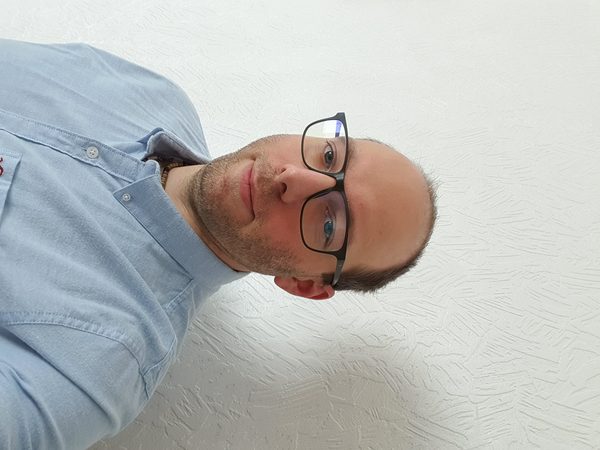

Adam Foldesi

Summary
I am hardworking and highly motivated individual with a strong passion for Front-End Web Development and Full-stack Web Development.
Seeking opportunities to contribute and grow in the dynamic world of web development.
Education
- CODE Lancashire BootCamp (September - December 2023)
- Professional Software Development Course (2020 - 2022)
- Welder Certificate, Hodmezovasarhely, Hungary (2011 - 2013)
- Science Technician High School, Hodmezovasarhely, Hungary (2009 - 2011)
- IT High School, Hodmezovasarhely, Hungary (2005 - 2009)
Work Experience
Skill
- Extensive computer and network system experience, both in maintenance and initial setup.
- Excellent communication and service skills, able to build relationships and establish connections.
- Attention to small details and excellent critical thinking, decision making, management, and leadership skills.
- Displaying skills to work with others from diverse backgrounds.
Awards and Certification
- CODE Lancashire BootCamp (September - December 2023)
Other